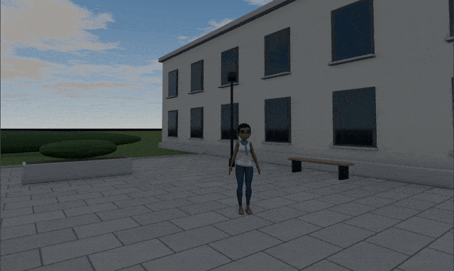
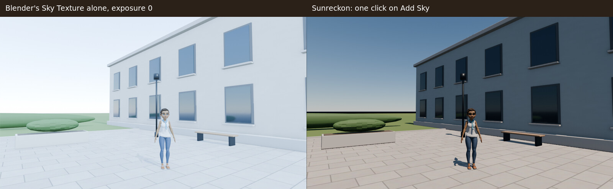
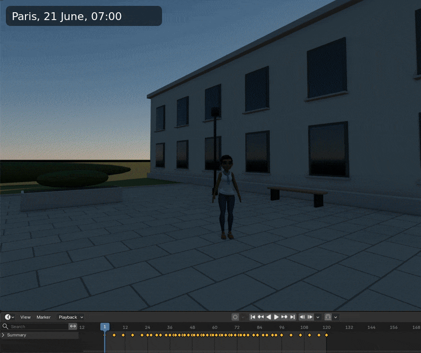
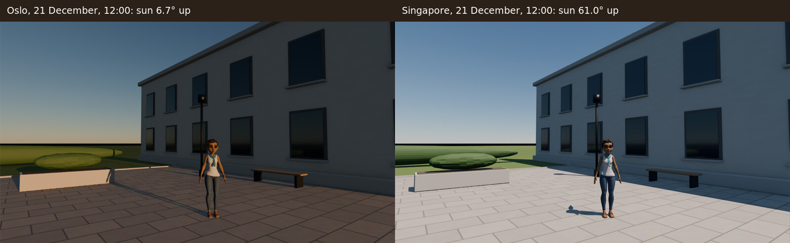
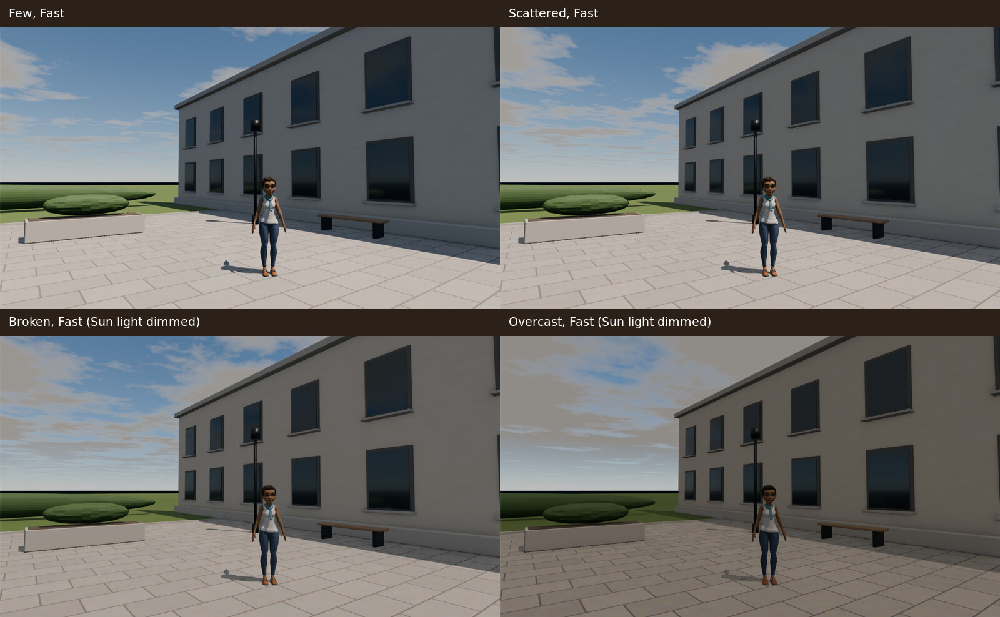
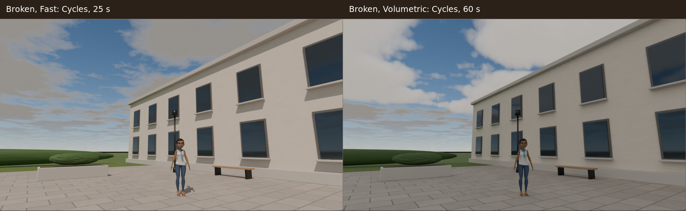
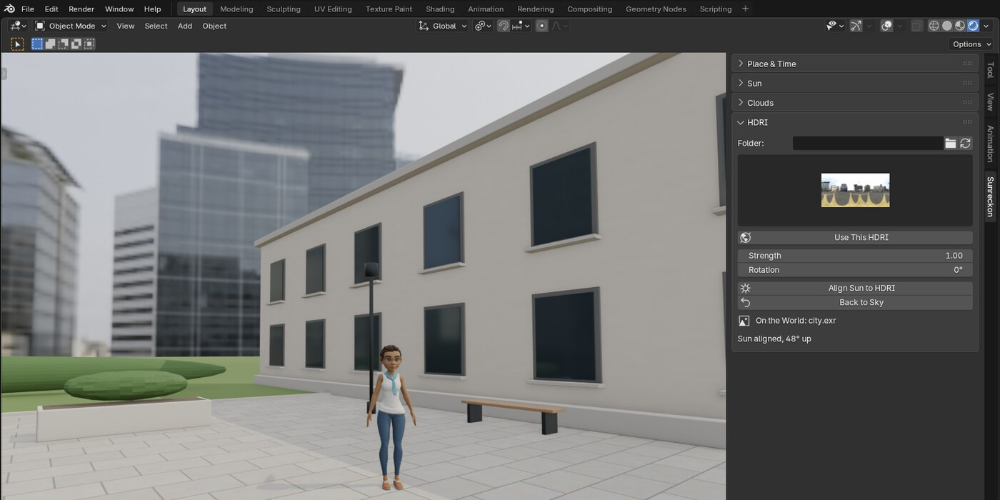

Sunreckon for Blender
![A Blender 5.2 window. In the viewport, in EEVEE, Blender Studio's Rain stands in a paved courtyard beside a plastered building at 19:30 on 21 June in Paris: warm low sun on the facade, a window catching the sun, scattered clouds in a blue sky, her shadow on the paving. On the right, the Sunreckon tab: City Paris, France, date 2026 6 21, Time 19:30, UTC 1.00 with DST, Clear air, Elevation 21.1°, Azimuth 282.0°, Sunrise 05:47, Sunset 21:58, then the Sun section with the Sunreckon Sun light at strength 98.7 and 4463 K, and the Clouds section with Scattered and Fast selected](img/hero-window-paris-1930.jpg)
Sky add-on broke after a Blender update? Sunreckon sets Blender's own physical sky and a matching Sun light from a place, date and clock time, in one sidebar tab, tested on every Blender from 4.2 LTS to 5.2 LTS.
$19, one-time, source included (GPL-3.0-or-later). Updates for the life of the product. Blender 4.2 LTS to 5.2 LTS, tested on seven versions (official Linux builds).
Polar checkout · download by email · 14-day refund if it doesn't work as described · no subscription, no licence key, no account · details
Above: Rain, Blender Studio's free character, in a courtyard in Paris at 19:30 on 21 June, Scattered clouds, EEVEE, the Sunreckon tab on the right. A real Blender 5.2.3 window.
How these images were made
Every image and GIF on this page is a capture of a real Blender 5.2.3 LTS window on Linux, 1920x1080, with Sunreckon installed from its zip through Blender's extension installer. The character is Rain v3.3 as downloaded from studio.blender.org (CC BY 4.0, credit at the end of the page), in her own rig; we switched her arms to FK and lowered them. The courtyard (paving, a plastered building, a bench, a planter, a lamp post, a lawn and a hedge) is ours, made of simple meshes with procedural materials. Every click, typed letter and menu pick in the GIFs is a real input event sent to the window; every number in the panel is Sunreckon's own.
The machine has no graphics card, so Blender draws the viewport in software and takes 15 to 20 seconds to settle after each change. In the click-through GIFs that wait plays four times faster than it happened; the clicks play at real speed. The time-of-day GIF has one capture per three timeline frames, played at 8 per second, with the clock label added afterwards from the frame number. The labels on the side-by-side images were added afterwards too. The Add Sky and HDRI GIFs and the panel images show Sunreckon 1.1.1; the other images were captured with 1.1.0, which draws the same sky, light and clouds (1.1.1 changed only how an HDRI thumbnail click is stored).
The video and its cloud GIF come from a second session on the same scene, with Sunreckon 1.1.1, in a 2560x1174 Blender window at twice the normal interface size. Clicks and typing are real input events recorded at 60 frames a second; the pointer is drawn at its recorded position with a ring at each click, and the waits while Blender redraws in software are cut. The camera move, the clock running from 13:00 to 20:40 and the drifting clouds were stepped one frame at a time, each frame drawn to EEVEE's full 16 samples before it was saved. The slow push-in on every shot, the captions and the clock in the caption bar were added in the edit; the clock shows the panel's own time. The Cycles render took 5 min 44 s on this 4-thread CPU, as Blender's own render line in the shot says.
Watch it work


Pick a place, a date, a clock time. One click.
![The Blender viewport in Rendered shading shows the courtyard lit only by Blender's default grey World, almost black. In the Sunreckon tab the cursor clicks the City field and types Tok; the list shows Tokyo, Japan, Vladivostok, Russia and Vostok, Antarctica. Tokyo, Japan is clicked: latitude 35.6870, longitude 139.7495, UTC 9.00, and the read-out says Elevation 58.0°, Azimuth 257.0°, Sunrise 04:25, Sunset 19:00. Add Sky is clicked: the viewport turns to a blue afternoon sky with sunlight on the paving and Rain's shadow beside her, and the Sun section shows the Sunreckon Sun light, strength 142.4, 5133 K](img/add-sky-tokyo.gif)
A whole day, keyed


What it does
- The sun where it really is. Pick one of 1,251 cities: each sets its latitude, longitude, UTC offset and daylight saving for the date, from the IANA time zone database stored in the add-on. Or paste coordinates as you copied them: "48.8566, 2.3522", degrees-minutes-seconds from Wikipedia or Google Earth, or a Google Maps or OpenStreetMap link; typed coordinates get a warning when the UTC offset does not fit the place. Set the date and local clock time, the scene's north, the altitude, and Clear, Hazy or City air. The panel shows the sun's elevation and azimuth and that day's sunrise and sunset.
- Measured against the reference. Against the NREL Solar Position Algorithm, the largest error is 0.010° over 14 reference cases (both hemispheres, solstices, equinoxes, high latitudes, daylight saving), and at most 0.014° in an independent check of 2,000 random places and dates from 1900 to 2100 with the sun above the horizon.
- One click to a daylight setup. Add Sky puts Blender's own Sky Texture on the World with the most accurate model your Blender has (Multiple Scattering on 5.0 and later, Nishita on 4.2 to 4.5), adds a Sun light that points where the sky's sun is (within 0.1°), and sets the exposure to -4.5 for the very bright physical sky. The light turns warmer and weaker toward the horizon and switches off below it.
- Animate Day. Keys the sky and the Sun light from a start time to an end time across your frame range; every frame stays within 0.1° of the true sun, including the tropics, where the sun swings fast near noon. Change the place, date, air, clouds or strength afterwards and the keys follow.
- Clouds with their render cost written down. Four presets named after cloud cover (Few, Scattered, Broken, Overcast) in two qualities, Fast and Volumetric, with the measured render time of each in the panel. Broken and Overcast dim the Sun light so the light agrees with the sky.
- Your HDRIs in the same tab. Thumbnails of the .hdr and .exr files in a folder you pick, plus the world HDRIs that ship with Blender. One click puts one on the World at your scene's own exposure, with rotation and strength. Align Sun to HDRI turns the Sun light toward the map's brightest point. Back to Sky brings the sky back as it was, exposure included. No HDRIs are included and nothing is downloaded.
- One tab, and a clean way out. Everything is in one Sunreckon tab in the 3D Viewport sidebar, with four sections you can fold: Place & Time, Sun, Clouds, HDRI. Nothing in any menu or header. All settings are saved in the .blend file; a file made in 4.2 opens in every later version with the same sun and the same panel values. Remove Sunreckon Setup deletes everything Sunreckon made and puts back the World and exposure you had, and never deletes anything another scene uses.
Clouds


- Fast: a cloud layer in the sky, for EEVEE and Cycles. It colours the light and casts no shadows on the ground.
- Volumetric: clouds that cast shadows. In Cycles, a real volume 16 km wide; in EEVEE, the clouds draw like Fast and a hidden shadow layer shaped like them, 2.4 km wide and thinning toward its edge, casts their shadows. Both are centred under your camera, and cloud heights follow the scene's unit scale.
- Performance Mode, on by default: the viewport shows Fast clouds while you work, and F12 renders the quality you chose. It matters in Cycles' Rendered viewport; in EEVEE, Volumetric clouds already draw like Fast ones in the viewport.
Render cost on the reference scene (a house on a lawn with trees, Paris, 21 June, 10:30, 1920x1080, Blender 5.2.3; Cycles on the CPU at 128 samples with adaptive sampling and denoising, EEVEE at 64 samples). Measured on a 4-thread machine without a graphics card, so EEVEE ran in software and its times are far longer than on any GPU; the "vs clear" columns are the part that carries over to your machine.
| Clouds | EEVEE | EEVEE vs clear | Cycles | Cycles vs clear |
|---|---|---|---|---|
| Clear sky | 63 s | x1.00 | 135 s | x1.00 |
| Few, Fast | 63 s | x1.00 | 163 s | x1.21 |
| Few, Volumetric | 61 s | x0.97 | 578 s | x4.29 |
| Scattered, Fast | 62 s | x0.99 | 167 s | x1.24 |
| Scattered, Volumetric | 64 s | x1.02 | 621 s | x4.62 |
| Broken, Fast | 61 s | x0.98 | 181 s | x1.35 |
| Broken, Volumetric | 62 s | x0.99 | 702 s | x5.22 |
| Overcast, Fast | 62 s | x0.98 | 190 s | x1.41 |
| Overcast, Volumetric | 66 s | x1.04 | 779 s | x5.79 |
These were measured on version 1.0.0; the cloud shaders have not changed since. 1.1.0 widened EEVEE's Volumetric shadow layer to 2.4 km, so the EEVEE Volumetric rows may now be slightly higher.
Your HDRIs, and back to the sky
![The Sunreckon tab with only the HDRI section open. The picture is clicked and a grid of thumbnails opens: Pick an HDRI, then Blender: city, courtyard, forest, interior, night, studio, sunrise and sunset. Blender: sunrise is clicked; the World becomes the sunrise HDRI with a blurred meadow behind the courtyard, and the panel says On the World: sunrise.exr. Align Sun to HDRI is clicked; warm low light reaches the building and the panel says Sun aligned, 8° up. Back to Sky is clicked and the blue Paris afternoon sky returns](img/hdri-switch.gif)
In Blender, for real
The tab at Blender's own size, captured from the same window as the images above.
![The Sunreckon tab at real size after Add Sky with Tokyo: Place & Time with City Tokyo, Japan, Lat 35.6870, Lon 139.7495, date 2026 6 21, Time 14:00, UTC 9.00, DST off, North Offset 0°, Altitude 0, Clear selected, Elevation 58.0°, Azimuth 257.0°, Sunrise 04:25, Sunset 19:00, Set Exposure and Remove Sunreckon Setup; then the Sun section with Sun Light Sunreckon Sun, Strength 142.4, 5133 K, Strength 1.00, Angle 0.53°, Sun Disc in Sky off, Day: 06:00 to 20:00 over frames 1-120, From, To, Key Every 10 and Animate Day](img/panel-place-time-sun.png)


Character: Rain Rig (CC) Blender Foundation | studio.blender.org, used under CC BY 4.0. We switched her arms to FK and lowered them, and placed her in a courtyard scene of our own. Rain is not included with Sunreckon, and Blender Studio does not endorse it.
How we tested
Every release runs one command that downloads the official Linux build of each Blender below, installs the zip with Install from Disk into a fresh user folder, and runs the full test suite and a separate set of acceptance tests written by an independent reviewer. Results for 1.1.1:
| Blender | Installs from the zip | Tests passed | Acceptance tests passed | Failed |
|---|---|---|---|---|
| 4.2.23 LTS | yes | 139 | 22 | 0 |
| 4.3.2 | yes | 138 | 22 | 0 |
| 4.4.3 | yes | 138 | 22 | 0 |
| 4.5.15 LTS | yes | 138 | 21 | 0 |
| 5.0.1 | yes | 138 | 21 | 0 |
| 5.1.2 | yes | 138 | 21 | 0 |
| 5.2.3 LTS | yes | 138 | 21 | 0 |
On 4.3 and later one test is skipped (the 4.2-only test that saves the file the later versions open); on 4.5 and later a second (a check of the RGB light colour that only 4.2 to 4.4 use). The zip also passes Blender's own extension validate.
Not yet tested: Windows and macOS builds. Tell us if anything behaves differently there.
Render farms and shared files
- The sky, the Sun light and an animated day are plain Blender data and keyframes. They render the same on a machine without Sunreckon.
- Performance Mode swaps Fast and Volumetric clouds at render time with Blender's render handlers, which need the add-on. A farm without Sunreckon renders what the viewport shows: Fast clouds, no volume. Turn Performance Mode off before you send the file, or install Sunreckon on the farm.
Details
- Buying: secure checkout by Polar. The download arrives by email right after payment; the zip includes the full source. One payment; updates for the life of the product at no charge. No subscription, no licence key, no account, no paid V2, and no personal or commercial split: commercial use is included. If it doesn't work as described and we can't fix it, email us within 14 days of purchase for a full refund (terms). Questions first? support@ochrestack.com.
- Blender 4.2 LTS to 5.2 LTS; earlier versions will not install. EEVEE and Cycles only. Installed as an extension from a zip.
- GPL-3.0-or-later. Full source code included with your purchase.
- Privacy: Sunreckon makes no network calls: no licence key, no account, no telemetry. It reads only the HDRI folder you pick and the HDRIs that ship with Blender, and writes only into your .blend file and Blender's thumbnail cache.
- Support: support@ochrestack.com, with your Blender version, your operating system and what you did.
Documentation
The Sunreckon quick start walks through every section of the tab; the limits and test results are on this page. Install the zip itself, as it is.
Install
- After checkout, download
sunreckon-1.1.1.zipfrom the link in Polar's email. Install the zip itself; do not unzip it first. - In Blender (4.2 LTS or newer), open Edit > Preferences > Get Extensions.
- Open the drop-down menu (⌄) at the top right, choose Install from Disk... and pick the zip. Dragging the zip into Blender's window also works.
- Press N in the 3D Viewport and open the Sunreckon tab. To see the sky in the viewport, use Rendered shading.
If Get Extensions asks about internet access, Continue Offline is fine: Sunreckon needs none.
Known limits
- Fast clouds cast no shadows on the ground; only Volumetric clouds do.
- No night sky, stars, moon, planets, aurora, fog, rain or snow, and no clouds the camera can enter.
- EEVEE's cloud shadows cover 2.4 km around the camera and fade out at the edge; wide aerial views show the fade. They are cut-outs, not soft volumes.
- The exposure is a fixed -4.5 for the sky: golden-hour shots, with the sun below about 15°, come out about a stop darker than midday. Raise the exposure for them.
- Time zones come with the city list, using each zone's 2026 daylight-saving rules: in other years the switch date can be a few days off, and historical offsets are not modelled. With typed or pasted coordinates you set the UTC offset yourself; the panel warns when it looks wrong.
- The Sun light's strength and colour are calibrated at sea level for each air preset; at high altitude the sky is Blender's, the light is not recalibrated.
- Align Sun to HDRI reads the whole map into memory once: about 0.6 GB extra for an 8k map and 2.2 GB for a 16k map, on top of Blender's own copy.
- The HDRI list shows the files directly in the folder you pick, not in its subfolders.
- Tested on Linux builds only so far.
$19 once, source included, updates for the life of the product · Polar checkout · 14-day refund if it doesn't work as described · Blender 4.2 LTS to 5.2 LTS, tested on Linux